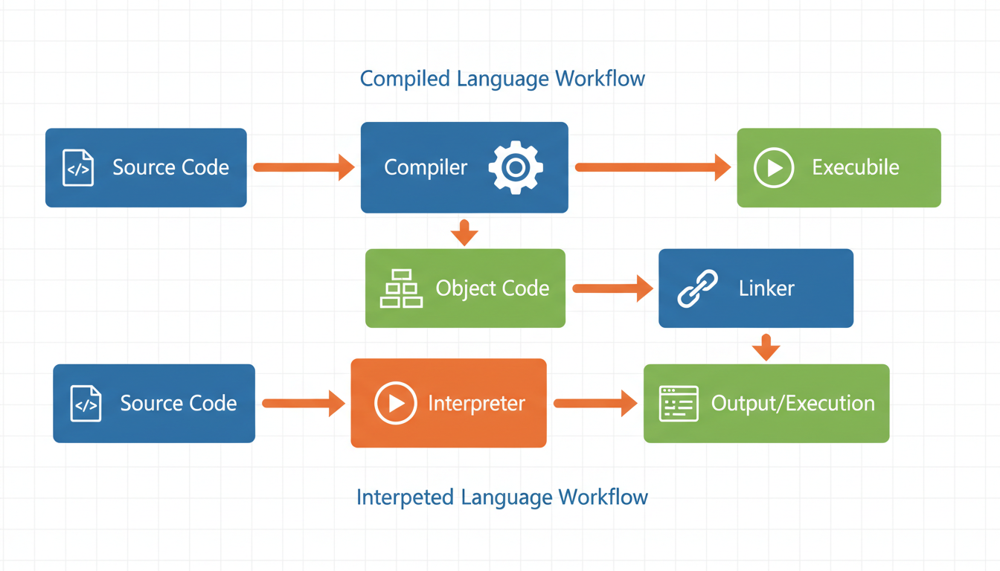

Компілятор
Компілятор (Compiler) — це програма, що перетворює вихідний код, написаний мовою програмування високого рівня, у машинний код або код на іншій мові (зазвичай мовою низького рівня).
Процес компіляції складається з кількох етапів:
- Лексичний аналіз — розбиття вихідного коду на токени (лексеми)
- Синтаксичний аналіз — перевірка правильності граматичної будови програми та побудова дерева розбору
- Семантичний аналіз — перевірка типів даних та правил використання ідентифікаторів
- Генерація проміжного коду — створення внутрішнього представлення програми
- Оптимізація — покращення коду за швидкістю та використанням пам'яті
- Генерація об'єктного коду — створення файлу з розширенням .obj або .o

Для C++ найпоширеніші компілятори:
- GCC (GNU Compiler Collection) — безкоштовний компілятор для Linux, macOS та Windows
- Clang — компілятор проєкту LLVM, відомий високою швидкістю та якістю повідомлень про помилки
- MSVC (Microsoft Visual C++) — компілятор від Microsoft для Windows
- Intel C++ Compiler — оптимізований для процесорів Intel
Інтерпретатор
Інтерпретатор (Interpreter) — це програма, що безпосередньо виконує інструкції, написані мовою програмування, без попереднього перетворення їх у машинний код.
Основні характеристики інтерпретації:
- Виконання відбувається рядок за рядком
- Програма виконується відразу після написання — не потрібна фаза компіляції
- Зазвичай повільніше за компільований код, оскільки кожна інструкція аналізується під час виконання
- Кросплатформенність — інтерпретатор абстрагує апаратне забезпечення
Python, JavaScript, PHP, Ruby, Perl. Ці мови не компілюються в машинний код безпосередньо, а виконуються спеціальною програмою-інтерпретатором.
Компонувальник (Linker)
Компонувальник (Linker) — це програма, що об'єднує один або кілька об'єктних файлів (.obj, .o) та бібліотеки в єдиний виконуваний файл.
Основні завдання компонувальника:
- Роздільне компілювання — дозволяє компілювати окремі частини програми незалежно
- Вирішення зовнішніх посилань — знаходить визначення функцій та змінних, що використовуються в різних файлах
- Підключення бібліотек — додає код зі статичних (.lib, .a) або динамічних (.dll, .so) бібліотек
- Розташування в пам'яті — визначає адреси для завантаження програми
Статичне та динамічне компонування
| Характеристика | Статичне компонування | Динамічне компонування |
|---|---|---|
| Розмір файлу | Великий (все включено) | Менший (залежності зовнішні) |
| Залежності | Не потребує DLL | Потребує DLL під час виконання |
| Завантаження | Повний код в одному файлі | Бібліотеки завантажуються за потреби |
| Розширення бібліотек | .lib (Windows), .a (Linux) | .dll (Windows), .so (Linux) |
Порівняння компіляції та інтерпретації
| Критерій | Компіляція | Інтерпретація |
|---|---|---|
| Швидкість виконання | Швидше | Повільніше |
| Час запуску | Потрібна компіляція | Миттєвий запуск |
| Діагностика помилок | Всі помилки на етапі компіляції | Помилки під час виконання |
| Залежність від платформи | Машинний код залежить від платформи | Інтерпретатор забезпечує незалежність |
| Оптимізація | Можлива агресивна оптимізація | Обмежена оптимізація |
| Приклади мов | C, C++, Rust, Go | Python, JavaScript, PHP |
C++ є компільованою мовою. Це означає, що програми на C++ спочатку перетворюються компілятором у машинний код, а потім компонувальником — у виконуваний файл. Завдяки цьому програми на C++ працюють набагато швидше за інтерпретовані мови.
Структура мов програмування високого рівня
Мови програмування високого рівня мають спільну структуру, що складається з наступних компонентів:
1. Алфавіт мови
Алфавіт — це набір допустимих символів, які можна використовувати при написанні програм. Для C++ алфавіт включає:
- Великі та малі літери латинського алфавіту: A-Z, a-z
- Цифри: 0-9
- Спеціальні символи: + - * / = < > ( ) { } [ ] ; : , . & | ^ ~ ! ? # _ " ' \ % @
- Пробільні символи: пробіл, табуляція, новий рядок
2. Лексичні одиниці (токени)
Токени — це найменші значущі елементи програми:
- Ключові слова (зарезервовані) — if, else, while, for, int, class, return тощо
- Ідентифікатори — імена змінних, функцій, класів
- Літерали (константи) — числові, символьні, рядкові
- Оператори — +, -, *, /, =, ==, && тощо
- Роздільники — ; , ( ) { }
3. Синтаксис
Синтаксис — це набір правил, що визначають, як з токенів утворюються правильні конструкції мови. Наприклад:
// Оголошення змінної
тип_даних ім'я_змінної;
// Оголошення функції
тип_повернення ім'я_функції(параметри) {
тіло_функції;
return значення;
}
// Умовний оператор
if (умова) {
дії;
} else {
альтернативні_дії;
}4. Семантика
Семантика визначає значення синтаксичних конструкцій — що саме відбувається при виконанні певного оператора. Наприклад, оператор a = b + c; має семантику: "зчитати значення b, додати до нього значення c, результат записати в a".
5. Система типів даних
Мови високого рівня надають набір базових типів даних та механізми для створення складних типів:
- Скалярні (прості) типи — int, float, char, bool
- Складні типи — масиви, структури, класи, перерахування
- Вказівні типи — покажчики, посилання
6. Керуючі конструкції
Будь-яка мова високого рівня надає конструкції для керування потоком виконання:
- Послідовне виконання — оператори виконуються один за одним
- Розгалуження — if, switch (вибір альтернатив)
- Цикли — for, while, do-while (повторення)
- Виклики підпрограм — функції та процедури
- Перехід — break, continue, return, goto
📝 Тести для самоперевірки
💻 Практичні завдання
Встановіть IDE Code::Blocks з компілятором MinGW. Створіть новий проект "Console Application", скомпілюйте та запустіть просту програму "Hello, World!". Зробіть скріншоти кожного етапу.
Використовуючи компілятор GCC, скомпілюйте програму з опцією -save-temps. Проаналізуйте згенеровані проміжні файли (.i — препроцесор, .s — асемблер, .o — об'єктний). Опишіть кожен файл.
Напишіть просту програму на C++ та скомпілюйте її двома способами: зі статичним та динамічним компонуванням. Порівняйте розміри отриманих виконуваних файлів та час їх запуску.
Встановіть обидва компілятори (GCC через MinGW та MSVC через Visual Studio Community). Скомпілюйте одну й ту саму програму обома компіляторами з рівнями оптимізації -O0, -O1, -O2, -O3. Порівняйте час виконання та розмір файлів.
Створіть повний список всіх ключових слів C++ (стандарт C++17). Для кожного ключового слова наведіть приклад використання та поясніть його призначення. Оформіть у вигляді довідника.
Візьміть програму з 50+ рядків коду та вручну розбийте її на токени: ключові слова, ідентифікатори, літерали, оператори, роздільники. Оформіть у вигляді таблиці з типізацією кожного токена.
Створіть детальну блок-схему роботи C++ компілятора від вихідного файлу .cpp до виконуваного .exe. Покажіть всі 6 етапів із зазначенням проміжних файлів та їх розширень.
Напишіть 10 програм з навмисними помилками різних типів: лексичними, синтаксичними та семантичними. Для кожної програми вкажіть тип помилки та поясніть повідомлення компілятора.
Створіть порівняльну презентацію трьох компіляторів C++ за критеріями: швидкість компіляції, якість оптимізації, якість повідомлень про помилки, підтримка стандартів, кросплатформенність, ліцензія.
Створіть детальну інфографіку, що показує структуру мови програмування високого рівня: алфавіт, токени, синтаксис, семантику, систему типів та керуючі конструкції з прикладами для кожного компонента.